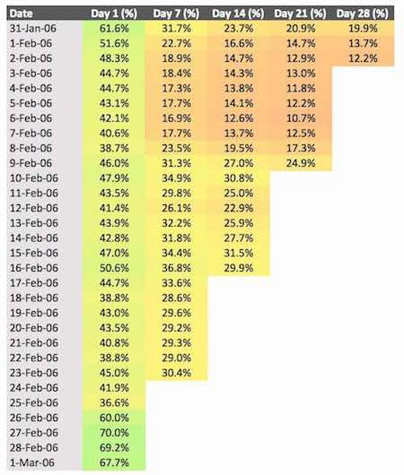

We'll be looking at a range of statistics that will help us understand how the game performed over the first month after release. This will include:
As measured by newPlayer events, there was a total of 102,392 installs over the 31 days.
The following chart shows the top 20 countries in terms of installations.
Number of users that recorded any event on a given day.
The ratio of Daily Active Users to Monthly Active Users (MAU) shows how well an app retains users. DAU/MAU for February 2006 was:
Average DAU: 18,879
February MAU: 96,339
DAU/MAU ratio: 19.6%
Most successful games have DAU/MAU ratios of around 20%.
Number of times the average user is opening the app on a daily basis.
Number of users that installed the game on Day 0 and then recorded an event on Day X.
Number of users that installed the game on Day 0 and then recorded an event on Day X.
Number of WebGL users that installed the game on Day 0 and then recorded an event on Day X.
Number of non-WebGL users that installed the game on Day 0 and then recorded an event on Day X.
What percentage of users played the game for more than one day.
Total in-app purchases over time.
Revenue per Daily Active User (ARPDAU), and per Paying User (ARPPU).
For users who have made a purchase, how many purchases are they making?
How much revenue is being created by each category of users?
Countries generating the most revenue.
Highest and lowest countries for revenue per install.
Has the difficulty changed from version to version?
When were users using each version?
Which levels were users attempting in each version?
Which levels are the most difficult (most failed attempts)?
Which levels cause the most players to give-up (next level never attempted)?
What does user drop-off look like over the first 100 levels?
Which levels are leading to users' first purchases?
What is the net balance of coins (coins received - coins used) each day?
| User Type | Users | Revenue | Revenue per User |
|---|---|---|---|
| Campaign | 25,024 | 8,775 | 0.35 |
| No Campaign | 74,935 | 6,662 | 0.09 |
| Total | 99,959 | 15,437 | 0.15 |
From the summary data, we might conclude that users coming from campaigns are more likely to make purchases, however, there could be confounding factors. For example, campaigns could be:
We can build a model to test this.
The model built attempts to account for all these factors, and has the following inputs:
We use these data points to create a Logistic Regression Model to that predicts whether a user will make a purchase (1) or not (0).
What conclusions can we draw from this model?
How accurate was the model?
When did the campaigns have the biggest impact?
Campaigns that produced the most revenue.
Campaign ID: 9s5vVew1HvRvFU+l8FHarl/rh1WBtudlUUe+K5CuudM=
New users: 1,784
Revenue created: 1,065
Device used: Primarily IOS (1,772 of 1,784)
Country of origin: Users come from most developed countries
Appears to be a successful campaign. Attracted a large number of users, with 218 (or 12.2%) of those those users going on to make in-app purchases.
Campaign ID: 4EPzfhaYBdO1groLb/JBb6j0OAV2bqxyn8fUBBeZ6HM=
New users: 215
Revenue created: 577
Device used: IOS
Country of origin: United Kingdom (212 or 215)
Appears to be a very positive campaign, but in fact, only 5 of the 215 users were paying users. It just happens that one of those users generated 573 of the 577 revenue.